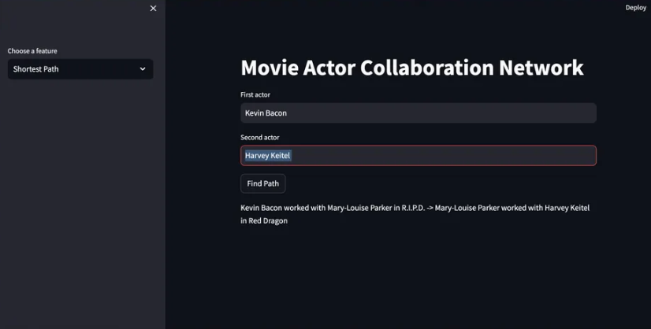
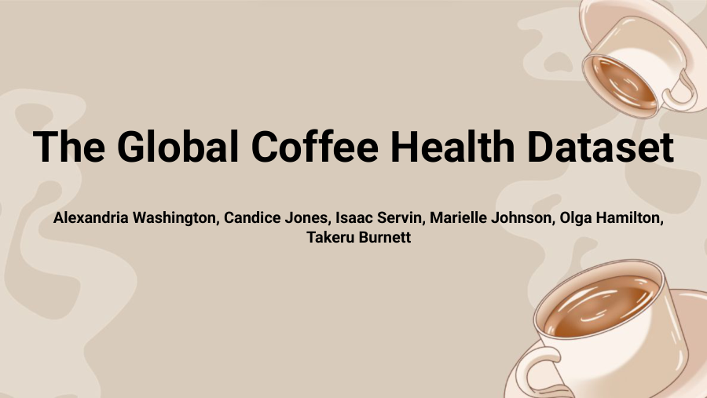

Ann Arbor Hands-On Museum Data Dashboards
Designed interactive dashboards that helped museum staff explore attendance, membership, and donor trends.
View ProjectSelected work
Explore my complete collection of analytics, research, product design, machine learning, and user-centered design projects.
All projects
Designed interactive dashboards that helped museum staff explore attendance, membership, and donor trends.
View Project
Built a Python graph application to explore actor connections, centrality, and collaboration paths.
View Project
Planned a platform connecting students with career-aligned volunteer opportunities and motivated employers.
View Project
Used statistical testing and machine learning to investigate whether daily coffee consumption predicts stress.
View Project
Designed a student-focused platform for discovering events, finding support, and building meaningful campus connections.
View Project
Analyzed 133 connections, recommended relevant contacts, and supported personalized professional outreach.
View Project
A mobile reading experience that helps university students build consistent habits, discover books, track progress, and connect with friends.
View ProjectA mobile app that helps young adults strengthen in-person communication by matching them through interests and encouraging real-world activities.
View Project